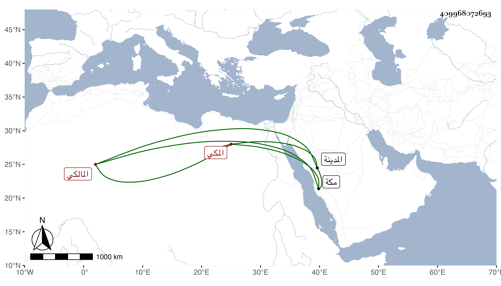

0902Sakhawi.DawLamic.ITO20230111-ara1.EIS1600.409968072693
Biography ID: 409968072693
594
حسين بن أبي حامد محمد بن أبي الخير بن أبي السعود بن ظهيرة المكي المالكي . ولد في رمضان سنة أربع وستين وثمانمائة . ممن سمع مني بمكة ولازم دروس أحمد بن حاتم المغربي وكذا حضر قليلا عند غيره ، ورأيته يكتب في شرح الارشاد للجوجري وزار المدينة غير مرة وكان في قافلتنا سنة ثمان وتسعين ذهابا وايابا .
